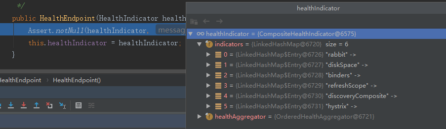

相信看完之前文章的同学都知道了SpringBoot自动装配的套路了，直接看spring.factories文件，当我们使用的时候只需要引入如下依赖
<dependency>
<groupId>org.springframework.boot</groupId>
<artifactId>spring-boot-starter-actuator</artifactId>
</dependency>然后在org.springframework.boot.spring-boot-actuator-autoconfigure包下去就可以找到这个文件
查看这个文件发现引入了很多的配置类，这里先关注一下XXXHealthIndicatorAutoConfiguration系列的类，这里咱们拿第一个RabbitHealthIndicatorAutoConfiguration为例来解析一下。看名字就知道这个是RabbitMQ的健康检查的自动配置类
@Configuration
@ConditionalOnClass(RabbitTemplate.class)
@ConditionalOnBean(RabbitTemplate.class)
@ConditionalOnEnabledHealthIndicator("rabbit")
@AutoConfigureBefore(HealthIndicatorAutoConfiguration.class)
@AutoConfigureAfter(RabbitAutoConfiguration.class)
public class RabbitHealthIndicatorAutoConfiguration extends
CompositeHealthIndicatorConfiguration<RabbitHealthIndicator, RabbitTemplate> {
private final Map<String, RabbitTemplate> rabbitTemplates;
public RabbitHealthIndicatorAutoConfiguration(
Map<String, RabbitTemplate> rabbitTemplates) {
this.rabbitTemplates = rabbitTemplates;
}
@Bean
@ConditionalOnMissingBean(name = "rabbitHealthIndicator")
public HealthIndicator rabbitHealthIndicator() {
return createHealthIndicator(this.rabbitTemplates);
}
}按照以往的惯例，先解析注解
@ConditionalOnXXX系列又出现了，前两个就是说如果当前存在RabbitTemplate这个bean也就是说我们的项目中使用到了RabbitMQ才能进行下去@ConditionalOnEnabledHealthIndicator这个注解很明显是SpringBoot actuator自定义的注解，看一下吧@Conditional(OnEnabledHealthIndicatorCondition.class)
public @interface ConditionalOnEnabledHealthIndicator {
String value();
}
class OnEnabledHealthIndicatorCondition extends OnEndpointElementCondition {
OnEnabledHealthIndicatorCondition() {
super("management.health.", ConditionalOnEnabledHealthIndicator.class);
}
}
public abstract class OnEndpointElementCondition extends SpringBootCondition {
private final String prefix;
private final Class<? extends Annotation> annotationType;
protected OnEndpointElementCondition(String prefix,
Class<? extends Annotation> annotationType) {
this.prefix = prefix;
this.annotationType = annotationType;
}
@Override
public ConditionOutcome getMatchOutcome(ConditionContext context,
AnnotatedTypeMetadata metadata) {
AnnotationAttributes annotationAttributes = AnnotationAttributes
.fromMap(metadata.getAnnotationAttributes(this.annotationType.getName()));
String endpointName = annotationAttributes.getString("value");
ConditionOutcome outcome = getEndpointOutcome(context, endpointName);
if (outcome != null) {
return outcome;
}
return getDefaultEndpointsOutcome(context);
}
protected ConditionOutcome getEndpointOutcome(ConditionContext context,
String endpointName) {
Environment environment = context.getEnvironment();
String enabledProperty = this.prefix + endpointName + ".enabled";
if (environment.containsProperty(enabledProperty)) {
boolean match = environment.getProperty(enabledProperty, Boolean.class, true);
return new ConditionOutcome(match,
ConditionMessage.forCondition(this.annotationType).because(
this.prefix + endpointName + ".enabled is " + match));
}
return null;
}
protected ConditionOutcome getDefaultEndpointsOutcome(ConditionContext context) {
boolean match = Boolean.valueOf(context.getEnvironment()
.getProperty(this.prefix + "defaults.enabled", "true"));
return new ConditionOutcome(match,
ConditionMessage.forCondition(this.annotationType).because(
this.prefix + "defaults.enabled is considered " + match));
}
}
public abstract class SpringBootCondition implements Condition {
private final Log logger = LogFactory.getLog(getClass());
@Override
public final boolean matches(ConditionContext context,
AnnotatedTypeMetadata metadata) {
String classOrMethodName = getClassOrMethodName(metadata);
try {
ConditionOutcome outcome = getMatchOutcome(context, metadata);
logOutcome(classOrMethodName, outcome);
recordEvaluation(context, classOrMethodName, outcome);
return outcome.isMatch();
}
catch (NoClassDefFoundError ex) {
throw new IllegalStateException(
"Could not evaluate condition on " + classOrMethodName + " due to "
+ ex.getMessage() + " not "
+ "found. Make sure your own configuration does not rely on "
+ "that class. This can also happen if you are "
+ "@ComponentScanning a springframework package (e.g. if you "
+ "put a @ComponentScan in the default package by mistake)",
ex);
}
catch (RuntimeException ex) {
throw new IllegalStateException(
"Error processing condition on " + getName(metadata), ex);
}
}
private void recordEvaluation(ConditionContext context, String classOrMethodName,
ConditionOutcome outcome) {
if (context.getBeanFactory() != null) {
ConditionEvaluationReport.get(context.getBeanFactory())
.recordConditionEvaluation(classOrMethodName, this, outcome);
}
}
}上方的入口方法是SpringBootCondition类的matches方法，getMatchOutcome 这个方法则是子类OnEndpointElementCondition的，这个方法首先会去环境变量中查找是否存在management.health.rabbit.enabled属性，如果没有的话则去查找management.health.defaults.enabled属性，如果这个属性还没有的话则设置默认值为true
当这里返回true时整个RabbitHealthIndicatorAutoConfiguration类的自动配置才能继续下去
@AutoConfigureBefore既然这样那就先看看类HealthIndicatorAutoConfiguration都是干了啥再回来吧@Configuration
@EnableConfigurationProperties({ HealthIndicatorProperties.class })
public class HealthIndicatorAutoConfiguration {
private final HealthIndicatorProperties properties;
public HealthIndicatorAutoConfiguration(HealthIndicatorProperties properties) {
this.properties = properties;
}
@Bean
@ConditionalOnMissingBean({ HealthIndicator.class, ReactiveHealthIndicator.class })
public ApplicationHealthIndicator applicationHealthIndicator() {
return new ApplicationHealthIndicator();
}
@Bean
@ConditionalOnMissingBean(HealthAggregator.class)
public OrderedHealthAggregator healthAggregator() {
OrderedHealthAggregator healthAggregator = new OrderedHealthAggregator();
if (this.properties.getOrder() != null) {
healthAggregator.setStatusOrder(this.properties.getOrder());
}
return healthAggregator;
}
}首先这个类引入了配置文件HealthIndicatorProperties这个配置类是系统状态相关的配置
@ConfigurationProperties(prefix = "management.health.status")
public class HealthIndicatorProperties {
private List<String> order = null;
private final Map<String, Integer> httpMapping = new HashMap<>();
}接着就是注册了2个beanApplicationHealthIndicator和OrderedHealthAggregator
这两个bean的作用稍后再说，现在回到RabbitHealthIndicatorAutoConfiguration类
@AutoConfigureAfter这个对整体逻辑没影响，暂且不提HealthIndicator这个bean的创建逻辑是在父类中的public abstract class CompositeHealthIndicatorConfiguration<H extends HealthIndicator, S> {
@Autowired
private HealthAggregator healthAggregator;
protected HealthIndicator createHealthIndicator(Map<String, S> beans) {
if (beans.size() == 1) {
return createHealthIndicator(beans.values().iterator().next());
}
CompositeHealthIndicator composite = new CompositeHealthIndicator(
this.healthAggregator);
for (Map.Entry<String, S> entry : beans.entrySet()) {
composite.addHealthIndicator(entry.getKey(),
createHealthIndicator(entry.getValue()));
}
return composite;
}
@SuppressWarnings("unchecked")
protected H createHealthIndicator(S source) {
Class<?>[] generics = ResolvableType
.forClass(CompositeHealthIndicatorConfiguration.class, getClass())
.resolveGenerics();
Class<H> indicatorClass = (Class<H>) generics[0];
Class<S> sourceClass = (Class<S>) generics[1];
try {
return indicatorClass.getConstructor(sourceClass).newInstance(source);
}
catch (Exception ex) {
throw new IllegalStateException("Unable to create indicator " + indicatorClass
+ " for source " + sourceClass, ex);
}
}
}HealthAggregator，这个对象就是刚才注册的OrderedHealthAggregatorcreateHealthIndicator方法执行逻辑为：如果传入的beans的size 为1,则调用createHealthIndicator创建HealthIndicatorCompositeHealthIndicator,遍历传入的beans,依次创建HealthIndicator,加入到CompositeHealthIndicator中createHealthIndicator的执行逻辑为：获得CompositeHealthIndicatorConfiguration中的泛型参数根据泛型参数H对应的class和S对应的class,在H对应的class中找到声明了参数为S类型的构造器进行实例化RabbitHealthIndicatorHealthIndicator接口，由此可以猜测RabbitHealthIndicator应该也是这样做的。观察这个类的继承关系可以发现这个类继承了一个实现实现此接口的类AbstractHealthIndicator，而RabbitMQ的监控检查流程则如下代码所示 //这个方法是AbstractHealthIndicator的
public final Health health() {
Health.Builder builder = new Health.Builder();
try {
doHealthCheck(builder);
}
catch (Exception ex) {
if (this.logger.isWarnEnabled()) {
String message = this.healthCheckFailedMessage.apply(ex);
this.logger.warn(StringUtils.hasText(message) ? message : DEFAULT_MESSAGE,
ex);
}
builder.down(ex);
}
return builder.build();
}
//下方两个方法是由类RabbitHealthIndicator实现的
protected void doHealthCheck(Health.Builder builder) throws Exception {
builder.up().withDetail("version", getVersion());
}
private String getVersion() {
return this.rabbitTemplate.execute((channel) -> channel.getConnection()
.getServerProperties().get("version").toString());
}上方一系列的操作之后，其实就是搞出了一个RabbitMQ的HealthIndicator实现类，而负责检查RabbitMQ健康不健康也是这个类来负责的。由此我们可以想象到如果当前环境存在MySQL、Redis、ES等情况应该也是这么个操作
那么接下来无非就是当有调用方访问如下地址时，分别调用整个系统的所有的HealthIndicator的实现类的health方法即可了
http://ip:port/actuator/healthHealthEndpointAutoConfiguration上边说的这个操作过程就在类HealthEndpointAutoConfiguration中，这个配置类同样也是在spring.factories文件中引入的
@Configuration
@EnableConfigurationProperties({HealthEndpointProperties.class, HealthIndicatorProperties.class})
@AutoConfigureAfter({HealthIndicatorAutoConfiguration.class})
@Import({HealthEndpointConfiguration.class, HealthEndpointWebExtensionConfiguration.class})
public class HealthEndpointAutoConfiguration {
public HealthEndpointAutoConfiguration() {
}
}这里重点的地方在于引入的HealthEndpointConfiguration这个类
@Configuration
class HealthEndpointConfiguration {
@Bean
@ConditionalOnMissingBean
@ConditionalOnEnabledEndpoint
public HealthEndpoint healthEndpoint(ApplicationContext applicationContext) {
return new HealthEndpoint(HealthIndicatorBeansComposite.get(applicationContext));
}
}这个类只是构建了一个类HealthEndpoint，这个类我们可以理解为一个SpringMVC的Controller，也就是处理如下请求的
http://ip:port/actuator/health那么首先看一下它的构造方法传入的是个啥对象吧
public static HealthIndicator get(ApplicationContext applicationContext) {
HealthAggregator healthAggregator = getHealthAggregator(applicationContext);
Map<String, HealthIndicator> indicators = new LinkedHashMap<>();
indicators.putAll(applicationContext.getBeansOfType(HealthIndicator.class));
if (ClassUtils.isPresent("reactor.core.publisher.Flux", null)) {
new ReactiveHealthIndicators().get(applicationContext)
.forEach(indicators::putIfAbsent);
}
CompositeHealthIndicatorFactory factory = new CompositeHealthIndicatorFactory();
return factory.createHealthIndicator(healthAggregator, indicators);
}跟我们想象中的一样，就是通过Spring容器获取所有的HealthIndicator接口的实现类，我这里只有几个默认的和RabbitMQ的

然后都放入了其中一个聚合的实现类CompositeHealthIndicator中
既然HealthEndpoint构建好了，那么只剩下最后一步处理请求了
@Endpoint(id = "health")
public class HealthEndpoint {
private final HealthIndicator healthIndicator;
@ReadOperation
public Health health() {
return this.healthIndicator.health();
}
}刚刚我们知道，这个类是通过CompositeHealthIndicator构建的，所以health方法的实现就在这个类中
public Health health() {
Map<String, Health> healths = new LinkedHashMap<>();
for (Map.Entry<String, HealthIndicator> entry : this.indicators.entrySet()) {
//循环调用
healths.put(entry.getKey(), entry.getValue().health());
}
//对结果集排序
return this.healthAggregator.aggregate(healths);
}至此SpringBoot的健康检查实现原理全部解析完成